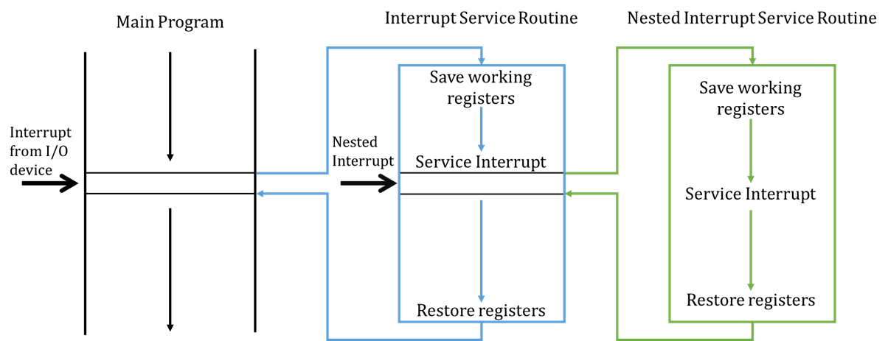

There is no single I/O mechanism that is “better” than the others – it is important to understand the pros and cons of each mechanism and the situations where each should be used.
Note that although these mechanisms all deal with I/O, they have different objectives.
In particular, memory mapped I/O and DMA are mechanisms which are used to communicate with peripherals/devices. Polled I/O, interrupt driven I/O and handshaking are used for synchronization and would be used together with DMA or memory mapped I/O.
Memory mapped I/O
- Same address bus is used to address both memory and I/O devices.
- Memory addresses are associated with particular I/O devices – when we want to send data to an I/O device, we send it to that memory address; when we want to receive data, we just read from that memory address.
- Memory and registers on I/O devices are mapped to these address values. An I/O device can then operate as designed on the data in these addresses.
This means that all addressing modes supported by a CPU are available to I/O.
Advantages. No need for dedicated instructions, or for additional hardware. Addressing modes supported by the CPU are available to I/O.
Disadvantages. We are giving up portions of our memory to I/O devices. This is less of a concern for modern 64-bit processors with more address spaces, but is still relevant when sometimes you have no choice but to use a processor with constrained memory addresses like 16-bit legacy or embedded systems.
Polled I/O
Synchronising I/O devices with our CPUs is one of the biggest challenges associated with I/O systems, as most of our I/O devices operate at much slower speeds than the CPU.
Our CPUs operate much faster than IO devices, so while IO devices are doing their thing, the CPU can do other things.
Busy-wait polling, where your CPU is constantly reading and checking the status of a particular IO device (essentially waiting for it to be ready), is very wasteful of CPU time and power. Only time you not want to do this, is for devoted systems that want to keep checking for the output because it is important (e.g. temperature sensor in nuclear reactor).
Polling, interleaved with another task is a bit better because you can do other tasks while waiting for your I/O devices to be ready. But even then, this can lead to significantly delayed responses to that device, because your estimate for the the time-interval between status checks can still be off and there are cases where your CPU is dominated by the so-called side tasks.
Advantages. Simple software and hardware involved; usually some kind of
looppaired with some conditional checks and hardware support for the notion of “ready” is all that is required.Disadvantages. Busy-wait polling – waste of CPU time and power. If you have a power constrained device, this may not be good. Interleaving can still lead to significantly delayed responses to a particular I/O device – not a problem in most cases but is a serious issue if you’re working in a hard real-time context.
Handshaking
Handshaking is another way of solving synchronisation problems with I/O devices. There are 3 kinds of handshaking:
- Unsynchronised – where you just provide data to an I/O device for it to process.
- Open-ended – provide some data and assert its validity, after which the I/O device will handle the data.
- Closed-loop (the only true two-way communication) – data provided, asserted validity of data, recipient (I/O device) readiness.
Closed-loop handshaking allows both parties to know the period/time-interval where effective data transfer can occur. This is when both data is valid and I/O device is ready to receive. This way the CPU can more accurately predict when data transfer can occur and when it should do other things.
Handshaking can be implemented with software or specialised hardware, which often requires fewer CPU instructions. Hardware solutions are usually used in embedded systems when software is not available for you to use.
Interrupts
Another way to target synchronisation problems. CPU normally executes instructions sequentially, unless a jump or branch is made – an interrupt input can force a CPU to jump to a service routine. The key difference between interrupts and handshaking or polling is that it is asynchronous.
Interrupt requests may be ignored depending on the current task that the CPU is working on. The CPU compares the “priority” of the tasks and decides which tasks supersedes the other. Non-maskable Interrupts cannot be ignored and the CPU will have to service the interrupt.
It is possible for a masked interrupt which was initially ignored to become non-masked (i.e., necessary to service) if it has been ignored for long enough.

When an interrupt is serviced, typically the CPU will finish the current instruction it is working on and, save the state of the working registers and the program counter (usually saving this state on a stack). It will then process the interrupt service routine. Once complete, it will remove the program counter from the stack and start processing instructions again from where it left off.
Pushing and popping the PC and status registers onto the stack before and after servicing an interrupt is known as a context switch because we are changing the state to execute a different set of instructions.
Maskable interrupts can be interrupted as well, provided that the new interrupt is of a higher priority than the current interrupt. This is why popping the PC and registers onto a stack is useful so we can keep track and sequentially process different set of instructions based on priority.
Interrupts for IO examples
Some IO devices can generate interrupts themselves.
A hard drive can generate an interrupt when data, requested some time earlier, is ready to be read.
A timer can generate an interrupt every 100ms and the service routine can then read a sensor input.
A printer can generate an interrupt when it is ready to receive the next character to print.
Advantages. The asynchronous nature of interrupts allow fast responses and no waste of CPU time/battery power – especially when the IO devices are asynchronous themselves.
Disadvantages. But, all data transfers still controlled by CPU (DMA addresses this). Interrupts also make hardware and software more complex.
Direct Memory Access (DMA)
Interrupts rely on the microprocessor (CPU) to do everything and this makes it the bottleneck for I/O if there are large amounts of data that must be transferred at high speed.
DMA fixes this by giving control of the system buses from the CPU to the DMA Controller (DMAC).
- The DMAC is a dedicated device that controls the three system buses during the data transfer.
- The DMAC is optimised solely for data transfer.
Advantages. When dealing with large amounts of data, DMA-based I/O can be up to 10 times faster than CPU-driven I/O. CPU is able to process other instructions that do not require the system buses while the DMAC oversees data transfer.
Disadvantages. Additional hardware cost.
DMA Modes of Operation
Cycle Stealing. DMAC uses the system buses when they are not being used by the CPU – usually by using available memory access cycles not used by the CPU. This is less effective and less common then the next mode of operation. This is equivalent to if you were working for 20 minutes at a time, but knew that every 18th minute you would be inefficient- instead of continuing to work in this time, you let the DMA handle the bus.
Burst Mode. DMAC acquires system buses for the transfer of large amount of data at high speed and preventing the CPU from using the system buses for a fixed time OR…
- until the transfer is complete
- the CPU receives an interrupt from a device of greater priority.
This is usually the events that take place before the CPU surrenders control of the system buses:
- DMA transfer requested by I/O
- DMAC passes request to CPU
- CPU initialises DMAC
- Specifies if it is an Input or Output operation.
- Sets the start address for the data transfer to the DMAC Address Register.
- Sets the number of words to transfer to the DMAC Count Register.
- CPU enables DMAC to initiate the transfer.
- DMAC requests use of system buses depending on its mode of operation.
- CPU responds with DMA Ack when it’s ready to surrender buses.